지금
이번에 먹을 약을 한 화면에.
지금 화면에서 이번에 먹을 약, 아직 표시하지 않은 약, 다음 약을 볼 수 있어요. ‘먹었어요’를 한 번 누르면 끝. 큰 글씨와 큰 버튼, 회원 가입은 없어요.
매일 약을 먹는 분과 가족을 돌보는 분을 위해 만들었어요.
지금
지금 화면에서 이번에 먹을 약, 아직 표시하지 않은 약, 다음 약을 볼 수 있어요. ‘먹었어요’를 한 번 누르면 끝. 큰 글씨와 큰 버튼, 회원 가입은 없어요.
알림
알림에는 ‘먹었어요’와 ‘10분 미루기’ 버튼이 있어요. 알림 방식을 고르세요. 보통, 반복(표시할 때까지 다시 울려요), 알람.
재고
상자에 남은 개수를 세어 두면 Pilulário가 언제 떨어질지 보여 줘요. ‘더 샀어요’로 새로 산 상자를 남은 양에 더해요.
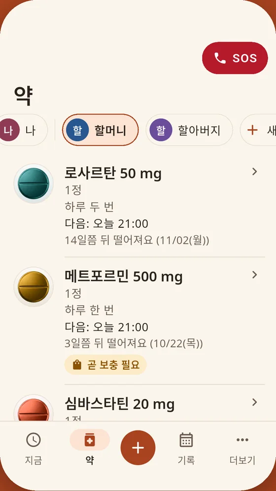
기록
하루·한 주·한 달: 먹은 약, 건너뛴 약, 누가 표시했는지. 잘못 눌렀으면 되돌리세요.
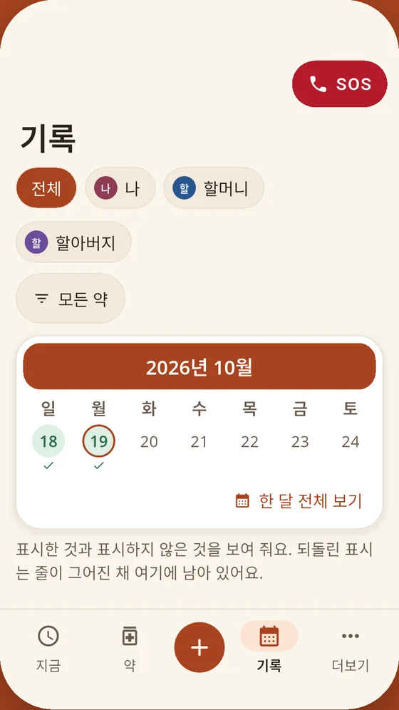
돌보는 분을 위해
사람마다 자기 색과 사진, 자기 약과 알림이 있어요. 메모, 알레르기, 주의 사항은 약을 주는 사람이 바로 볼 수 있어요.
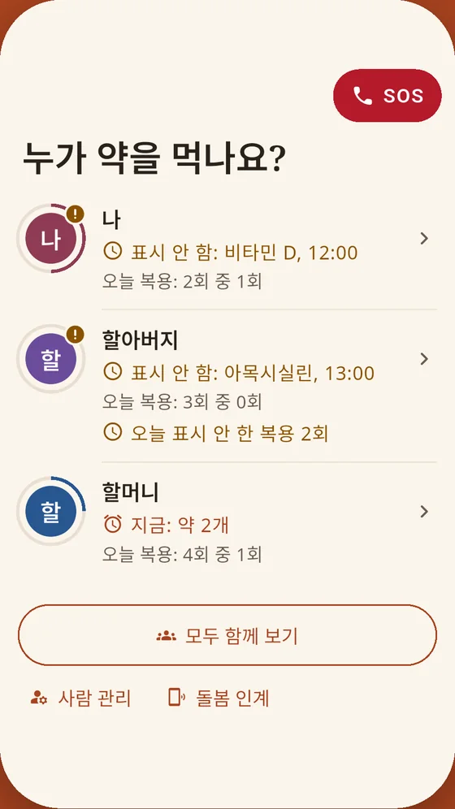
돌봄 인계
다른 사람에게 돌봄을 맡기나요? 인터넷 없이 카메라로 약을 넘기고, 무엇을 줬는지 기록을 돌려받아요.
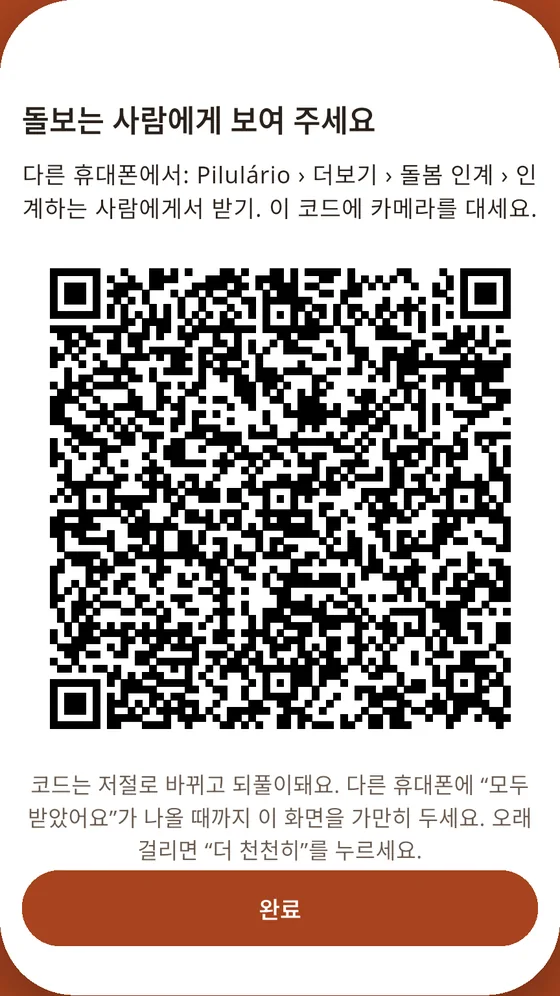
알림 상태 점검
휴대폰이 알림을 울리게 두는지 앱이 확인하고, 무엇을 바꿔야 하는지 보여 줘요. SOS 버튼에는 긴급 전화번호와 보호자 전화번호가 있어요.
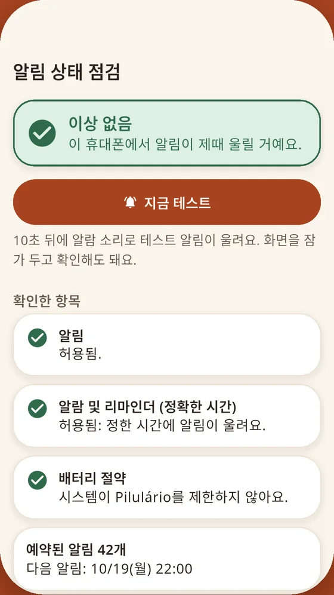
알림, 재고, 기록, SOS는 약 개수 제한 없이 무료예요. 한 번 구매 ‘가족·돌보미’는 여러 사람을 돌볼 때 편한 기능을 더해 줘요.
앱 화면.
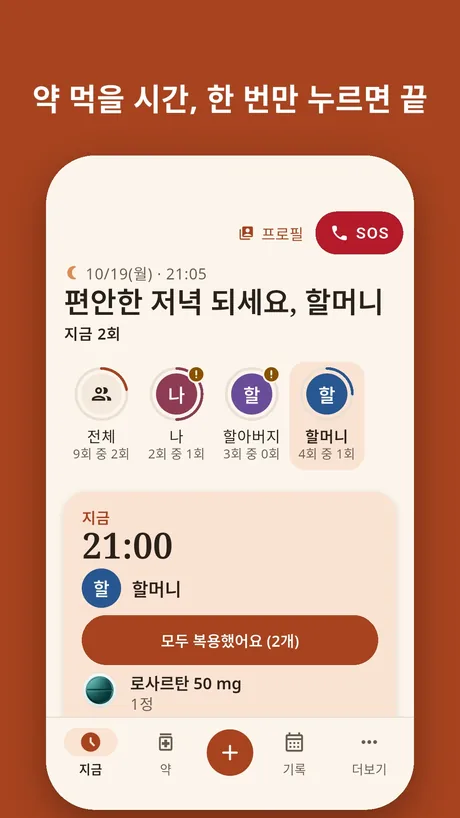
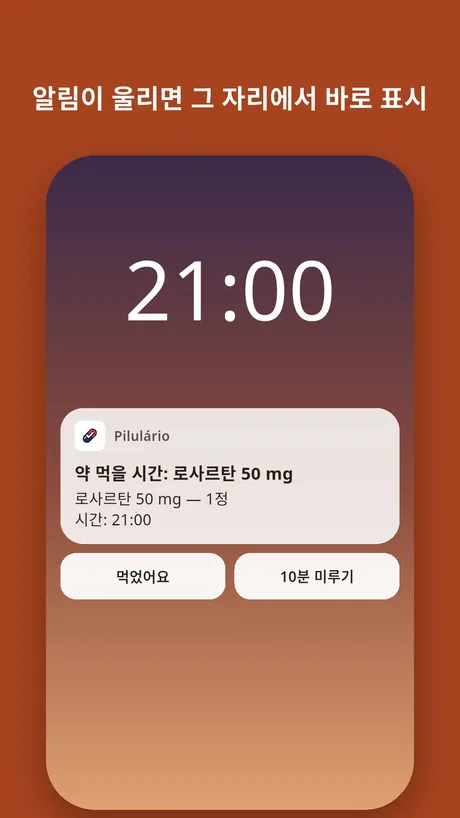
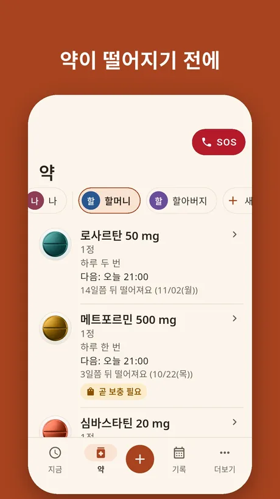
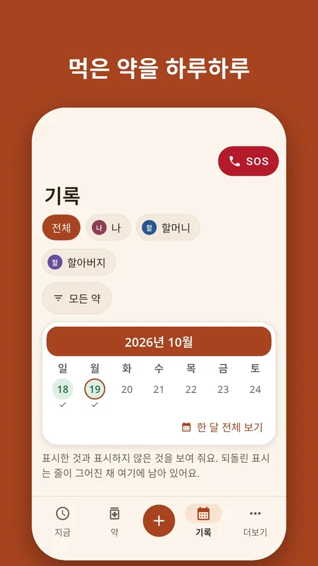
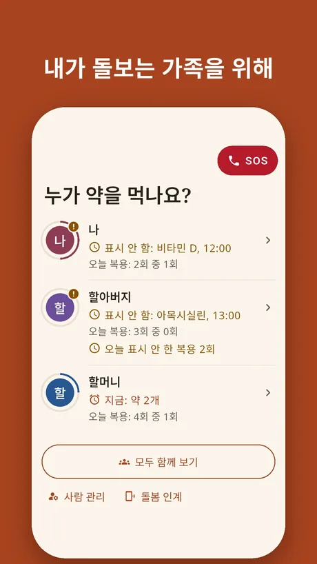
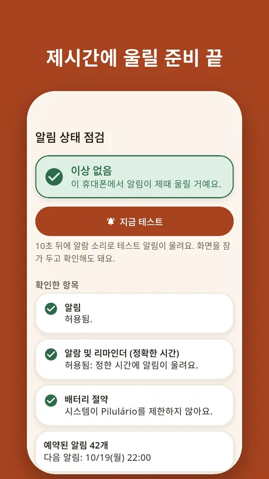
계정도, 광고도, 데이터 수집도 없어요. Pilulário는 인터넷을 쓰지 않아요. 입력한 내용은 기기에 남고, 요약을 공유하거나 백업을 내보내거나 다른 휴대폰으로 돌봄을 인계할 때만 밖으로 나가요.
네. 알람, 재고, 기록, SOS는 약 개수 제한 없이 무료예요. 한 번 구매 ‘가족·돌보미’는 여러 사람, 돌봄 인계, 메모, 고급 모드를 더해 줘요. 구독도 광고도 없어요.
네. 앱은 인터넷을 쓰지 않아요. 알림, 데이터, 돌봄 인계 모두 휴대폰이 오프라인이어도 돼요. 구매만 스토어를 거쳐요.
아니요. 가입이 없어요. 새 휴대폰으로 옮기려면 백업을 파일로 내보내세요.
‘알림 상태 점검’을 여세요. 앱이 알림, 알람, 배터리 권한을 확인하고 무엇을 바꿔야 하는지 보여 줘요. 바로 시험 알림을 울려 볼 수도 있어요.
아니요. Pilulário는 알림 앱이에요. 의료기기가 아니며, 약이나 용량, 복용 시간을 제안하지 않고, 의사나 약사의 안내를 대신하지 않아요.